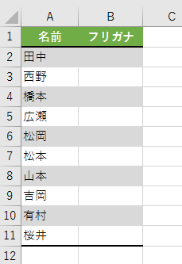

Q7_4) 次のコードは、セル範囲A2:A11の各セルに対して、フリガナが設定されていればそのフリガナを、
フリガナが設定されていなければ"×"を、B列のセルに代入するマクロである。
[空欄]に入る適切な語句を入力しなさい。ただし、2つの空欄には同じ語句が入ります。
Sub Macro1()
Dim i As Long
For i = 2 To 11
If Cells(i, 1).[空欄].Text = Cells(i, 1) Then
Cells(i, 2) = "×"
Else
Cells(i, 2) = Cells(i, 1).[空欄].Text
End If
Next i
End Sub
